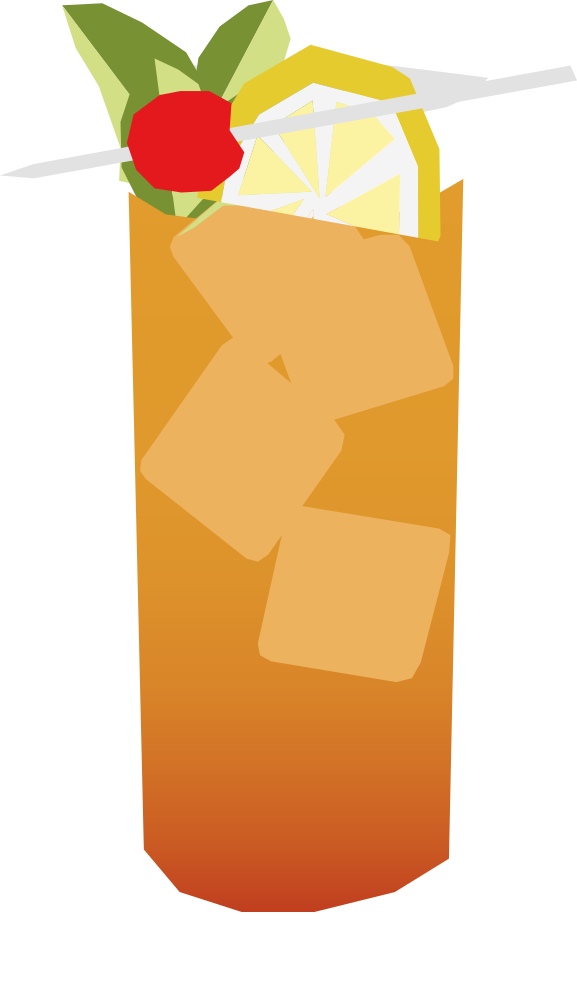

¿Alguna vez has hecho swizzle?
Bebida nacional bermudeña desde los años 30, asociada al histórico Swizzle Inn. Su nombre viene de la técnica de "swizzling": batir la mezcla con una ramita partida en varias puntas para enfriarla y airearla rápidamente.
RECETA
- 45 ml ron dorado
- 30 ml jugo de naranja
- 30 ml jugo de piña
- 15 ml jugo de limón
- 15 ml falernum
- 2 golpes de Angostura bitters
- Hielo en cubos
- 1 Rodaja de naranja
- 1 cereza jubilee
- Agrega todos los ingredientes a una coctelera con hielo.
- Agita bien y sirve con hielo.
- Decora con una rodaja de naranja y una cereza
Vaso: Old fashioned / vaso bajo